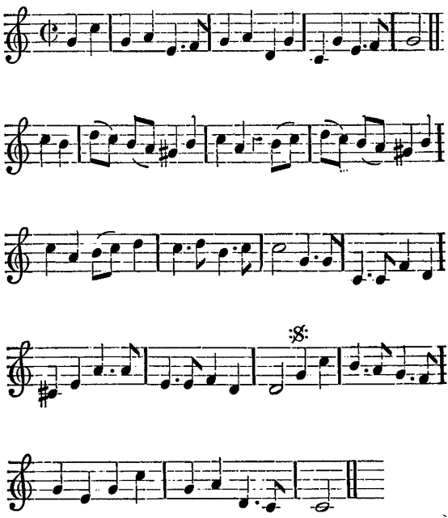
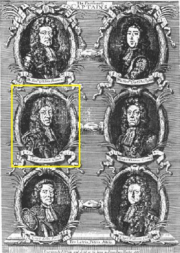

Would you see three Nations bubbled?
Voyez ces trois nations qu'égare
from the MS at Towneley Hall
Tune - Mélodie"Would you be a man of fashion" by Simon Packe (1654 - 1701)
From "Wit and Mirth or Pills to purge Melancholy" edited by Thomas d'Urfey, volume V, p.154, 1719
First published by John PLayford in 1684
Sequenced by Christian Souchon
|
To the tune:
This song is an evident imitation of another song, popular at that date, written by Captain Packe, "the Compleat Citizen, or the Man of Fashion" : " Would you be a Man in Fashion? Would you lead a life divine? Take a little Dram of Passion, In a lusty Dose of Wine. If the Nymph has no Compassion, Vain it is to sigh and groan; Love was but put in for Fashion, Wine will do the Work alone.' This song was first published by John PLayford in 1684. It is included among the " 180 Loyal Songs," 1694, and the "Pills to purge Melancholy" edited by Thomas d'Urfey, (volume V, p.154) in 1719. At the same time, the present song is the answer to the Whiggish song against James II , written before 1688, which appeared in the first of the four quarto "Collections of Songs against Popery" issued in 1689 (p. 20). It reads thus: 1. Would you be a Man of Favour? Would you have your Fortune kind? Wear the Cross, and eat the Wafer You'll have all things to your mind. If the Priest cannot convert you, Interest then must do the thing; There are Statesmen can inform you, How to please a Popish King. 2. Would you see the Papists lowering, Lost in Horror and affright; And their Father Petre (*) scouring, Glad of time for happy flight? Stay but till the Dutch are landed, And the Show will soon appear; When th' infernal Court's disbanded, Few will stay for Tyburn here. (*) William Petre (1576 - 1637), 2nd Baron Petre was an elected MP for Essex and a staunch "recusant" (refused to attend to Anglican services, in spite of the punishments imposed until 1650. The last restrictions were removed in the 19th century). He was therefore dismissed and deprived of all his offices. His house, near London, was a constant refuge for Catholics and Jacobites. |
The Mann of Fashion "Pills to purge Melancholy", vol. 5, P. 154 |
A propos de la mélodie:
Ce chant imite, de toute évidence, un autre chant connu à l'époque, le "Citoyen accompli" ou l'"Homme à la mode" du Capitaine Packe: "Voulez-vous être à la mode Et justifié devant Dieu? Qu'un peu de passion au vin s'accorde C'est ce qu'il y a de mieux. Mais si la nymphe est rétive, Rogne et soupirs, à quoi bon? Puisque avec le vin seul on s'enivre. L'amour n'est que de bon ton. Cette chanson fut publiée par John Playford en 1684. Elle figure parmi les "180 Chants loyaux" de 1694 et dans les "Pillules contre la mélancolie" de Thomas d'Urfey (volume 5, p. 154) parues en 1719. En même temps, le présent chant est la réponse au Chant Whig contre Jacques II composé avant 1688, lequel fut publié dans le 1er des 4 recueils in-quarto "Chants contre les Papistes", en 1689, page 20. En voici le texte: 1. Pour que le sort vous sourie, Pour profiter des faveurs, Portez la croix, goûtez à l'hostie! Tout ira selon vos cœurs. L'intérêt, sinon le prêtre, Saura bien vous convertir. Plus d'un ministre on vit se mettre, Roi papiste, à te servir. 2. Pour abaisser les Papistes, Les frapper d'affolement, Et que Petre cherche dans la fuite, Son salut tant qu'il est temps, Que les Hollandais débarquent! Le rideau pourra s'ouvrir! Tribunal infernal et monarque Loin de Tyburn voudront fuir. (*) William Petre (1576 - 1637), 2ème Baron Petre, député élu de l'Essex, fut un farouche "récusant" (il refusait de participer aux services religieux anglicans, malgré les pénalités encourues jusqu'en 1650. Les dernières vexations ne disparurent qu'au 19ème siècle). Pour cette raison il fut démis de toutes ses charges. Sa maison près de Londres servait de refuge aux Catholiques et aux Jacobites. |
|
To the author:
Simon Packe was born in London on 31st December 1654 as the younger son of Sir Christopher Packe who became Lord Mayor of London and was knighted by Oliver Cromwell in 1655 and Anne Edmonds, the daughter of another Lord Mayor of London. Upon Charles II's restoration in 1660, Simon was commissioned into the army and saw service from 1678 to 1680, but from 1680 to 1684 he was on half pay and during this time he acquired a reputation as a composer of play songs. He composed music for several shows and had eighteen songs printed in various collections. His best known song was probably 'Would you be a Man in Fashion' first published in Book 5 of John Playford's "Choice Ayres, Songs and Dialogues" (1684). Simon rubbed shoulders with the great playwrights and musicians of his day. He obviously knew Purcell well and was influenced by him. Modern opinion is that his songs, if not spectacular, are quite tuneful. In his military career, Simon gained a degree of notoriety by the part he took in the "Revolt of the Portsmouth Captains" : King James II encouraged Irish Catholics to enlist, especially as officers. Simon Packe and other captains protested against what they felt was a disastrous policy. In 1688 they were arrested and cashiered. Posters engraved with their heads were published. In the wake of the acquittal of seven bishops who protested against reading the Declaration of Indulgence from their pulpits, the captains' rank were restored. Shortly afterwards James II abdicated (Glorious Revolution) and Packe promoted to Lt. Col. in 1689. He then served with William III in Ireland at the Battle of the Boyne in 1690 and was at the second siege of Limerick in 1691. He died on 2nd April 1701 and is buried in Prestwold church. source: Philipp White in "The Wolds Historian" No.1 2004 |
 Poster showing the 6 Portsmouth Captains |
A propos de l'auteur:
Simon Packe est né à Londres le 31 décembre 1654. C'était le fils cadet de Sir Christopher Packe qui devint Lord Maire de Londres et fut anobli par Olivier Cromwell en 1655. Sa mère, Anne Edmonds était la fille d'un autre Lord Maire de Londres. A la restauration de Charles II en 1660, Simon entra comme officier dans l'armée où il servit de 1678 à 1680, avant d'être réduit à demi-solde entre 1680 et 1684, période durant laquelle il se fit une réputation comme compositeur de chansons pour pièces de théâtre. Il composa pour plusieurs spectacles et quinze chansons de lui furent imprimées dans divers recueils. Son plus grand succès fut sans doute "Pour être un homme à la mode" , paru pour la première fois dans le livre 5 des "Airs, chants et dialogues choisis" de John Playford en 1684. Simon côtoya les grands auteurs dramatiques et musiciens de son temps. Il est certain qu'il connaissait Purcell dont il subit l'influence. On s'accorde aujourd'hui à reconnaître à ce chansonnier sinon du génie, du moins du talent. Comme militaire, Simon est surtout connu pour être l'un des "Six capitaines révoltés de Portsmouth" : le roi Jacques II facilitait l'accès aux grades d'officiers des catholiques irlandais. Simon Packe et d'autres capitaines protestèrent contre ces mesures qu'ils considéraient pernicieuses. En 1688 ils furent arrêtés et congédiés. Des gravures avec leurs portraits furent diffusées. Au moment où étaient acquittés les sept évêques qui protestaient contre la lecture en chaire de la Déclaration d'indulgence, les capitaines furent réintégrés. Peu après Jacques II abdiquait (Glorieuse révolution). Packe fut promu lieutenant colonel en 1689. Sous Guillaume III is combattit en Irlande à la Boyne en 1691 et au 2ème siège de Limerick en 1691. Il mourut le 2 avril 1701 et est enterré dans l'église de Prestwold. |

|
A SONG
1. Would you see three Nations bubbled (=cheated) By a pious trick of State: With our Taxes daily doubled, With our Taxes daily doubled, Till we sink beneath the weight? Would you understand the reason, Why these woes we justly bear? They're the due rewards of Treason, In which course we blindly Steer! They're the due rewards of Treason, In which course we blindly Steer! 2. Would you see the Man of Sorrows, Then behold great JAMES the just, (=James II) Though Grief his cheeks hath ploughed in furrows, Yet in him Still put your trust ? His Majesty's divinely sacred, Which your conscious hearts must own, 'Twas your blind misguided hatred, Drove him from his Lawful throne ? 3. Think not but his tears are numbered, And his sorrows duly weighed, Think with what ills we've been encumbered, Since God's laws we've disobeyed. Would you be accounted Christians, And wipe off this fatal Stain, Banish hence those vile Philistians, And call home your King again ? 4. Peace and Plenty then ensuing, Halcyon days shall come again, Heaven shall then repair your ruin, And drop fatness down in rain. All nature in one voice consenting, Brittain's Joys shall then proclaim, The vocal Hills and Vales exulting, Shall proclaim a STUART'S reign. (=theme of the Golden Age ) Source: "From "English Jacobite Ballads...from the MS at Towneley Hall" by A.B. Grosart (1877), page 23 . |
CHANT
1. Voyez ces trois nations qu'égare L'Etat au nom de la foi: Chaque jour on nous prépare Chaque jour on nous prépare L'impôt nouveau qui nous broie. Voulez-vous que je vous dise? Ces maux sont bien mérités. Ils rétribuent la traîtrise Où nous sommes entraînés. Ils rétribuent la traîtrise Où nous sommes entraînés. 2. L'homme de douleur a fait place, Au grand JACQUES aujourd'hui: (=Jacques II) Le deuil se lit sur sa face. Ayez confiance en celui Dont la gloire de Dieu même Procède. Soyez certains Que c'est votre aveugle haine A son règne qui mit fin. 3. N'allez pas croire que les larmes, Les maux ne soient que pour lui. Dieu veut accabler d'alarmes Quiconque désobéit. Pour vous laver de l'opprobre, Et redevenir chrétiens Rendez au roi trône et robe! Chassez ces vils Philistins! 4. Dans le calme et dans l'abondance Nous vivrons des jours de paix. C'est nos malheurs que compensent Ces pluies de miel et de lait. Et toutes les créatures Pourront se réjouir de voir La fin de la forfaiture Et le retour des STUART. (=thème de l'âge d'or ) Traduction Christian Souchon (c) 2011 |